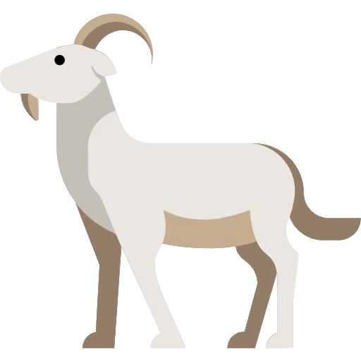

Как развивался кофе

Легенда о козах
По легенде, пастух из Эфиопии заметил, что козы становятся бодрыми после поедания красных ягод.

Арабский мир
В XV веке кофе распространился по Аравийскому полуострову. Первые кофейни открылись в Мекке.
По всему миру
В XVII веке кофе попал в Европу, а затем и в Америку. Появились плантации в Бразилии и Колумбии.
Почему важна обжарка?
Сырое кофейное зерно не имеет аромата. Только во время обжарки при высокой температуре появляются те самые вкусовые и ароматические соединения, которые мы любим в кофе.
Мы в Fireside Coffee используем традиционные методы обжарки, которые позволяют раскрыть весь потенциал каждого зерна.